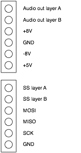

Overall design
Ambika consists of one motherboard and up to 6 voicecards - each of them containing a complete sound synthesis voice under the control of the motherboard.
The main motivation behind this design was the choice of the low performance 8-bit AVR as a platform for the digital oscillators code. At the time Ambika was designed, this was the only through-hole part with a well-supported, easily available open-source toolchain based on gcc - the fact that the Shruthi-1 codebase was already proven on this platform was a plus. This required one MCU per voice, and it was thus decided to keep each voicecard as close as possible to a simple standalone synth. An advantage of this is that it suits well the "mix and match different filters/voicecards". The inconvenient is that a multi-processor system is always more difficult to troubleshoot than a single processor system!
Motherboard
Power supply
Earlier versions of Ambika used a single +9V supply for the analog section with a virtual ground; but the noise floor was higher (it required a lot of bypassing on the virtual ground).
Thus, a proper +/- 8V symmetric supply was chosen. The advantage of 8V is that there exists fixed output positive and negative regulators for this voltage; and that it is relatively close to +5V -- a lot of current is drawn on the +5V rail, so there's an incentive to use an input voltage which is not too high, to avoid having to dissipate too much power on the +5V regulator.
The requirements for a fully loaded unit with SMR4 voicecards are the following: 310mA for the +5V; and 130mA for the +/- 8V rails.
We decided to work from an AC wallwart (which is really just a step down transformer) to keep builders away from anything dealing with mains voltage. The big inconvenient of those is that they do not have a center tap, so a full-wave rectification input stage is not possible. Half-wave rectification is what is used on the Ambika power supply. It requires fairly large input capacitors and/or will cause quite some ripple at the rectification stage.
Our original design used a 4700uF cap for positive rectification, and 7805 / 7808 / 7908 regulators. When powered with 12V AC, the 7805 was getting too hot; when powered with 9V AC, the ripple on the rectified positive input of the 7808 was dipping below 10.5V and caused ripple on the output. We thus replaced the 7808 with a LDO (LM2940-8.0) more tolerant to the ripple (it would have required more than 10000u of caps in the rectifier to make the ripple go away). It is still possible to run Ambika on 12V AC if a switching-mode pin-compatible 7805 replacement is used such as the PT78ST105H - this is indeed the best solution to minimize heating inside the case.
| Input supply | +8V regulator | +5V regulator | Observations |
|---|---|---|---|
| +9V AC | LM2940-8 | 7805 | Recommended |
| +12V AC | 7808 | PT78ST105H | Recommended |
| +9V AC | 7808 | 7805 | 50Hz Hum on audio output when too many voicecards are installed |
| +12V AC | 7808 | 7805 | Works, but 7805 heatsink gets very hot |
MIDI input
Note that the pull-up resistor on the 6N137 has an unusually high value of 10k. This softens the edges of the MIDI signal, since some DIP ATMega644p running at 20 MHz suffer from a bug causing random memory corruption when sharp spikes are injected on the UART input (this is apparently a rarer instance of this problem).
SD card
The SD card is the only part of Ambika running on +3.3V. It has its own small (TO92) regulator, an MCP1700. Level translation from +5V to +3.3V is handled by a 4050N. There is no level translation from +3.3V to +5V as the ATMega has a logic threshold below +3.3V.
Audio output
The audio output of each voicecard is connected to the corresponding individual output jack through a 470R resistor which serves as extra short circuit protection. When the jack is not inserted, the signal is routed to an inverting mixer with a gain of 1, then through the volume pot, then through an inverting mixer with a gain of 1 (to get the original phase) - this yields the "mixed" output. This realizes the same behavior as drum machines like the 808, in which plugging a jack in an individual output removes the corresponding instrument from the global mix.
User interface
The 8 switches are read into a parallel-in / serial-out shift register (165).
The 15 LEDs are addressed by two daisy-chained parallel-out / serial-in shift registers (595). The LEDs are bicolor (green or orange depending on the polarity). The 16th output of the 595s chain is used to either source/sink current into the LEDs, controlling their colors. This works because the 595 can source/sink up to 10mA. For example, to light the first LED in green, the bit pattern is: 10000000 00000000. To light the first LED in orange, the bit pattern is: 01111111 11111111. 00000000 00000000 or 11111111 11111111 switches off all LEDs. To allow different brightness levels and the simultaneous display of green and orange, we alternate between displaying the green field (with 16 brightness levels achieved through software PWM); and the orange field.
The LCD module is a HD44780 compatible device, it is refreshed using the same approach as on the Shruthi.
The 8 pots are directly connected to the MCU's ADC inputs without external hardware multiplexing.
The rotary encoder is directly connected to the MCU and is debounced / decoded in software.
SPI bus
The SPI bus is used in a 1-master / 8-slave configuration. The slaves are the 6 voicecards (address 0 to 5); an expansion port used for future peripherals/controllers (address 6) and the SD card (address 7). Slave selection is done by a 3 to 8 decoder (74hc138), whose output pins are hooked to the SS pin of each slave. The hardware SPI module of the 644p is used, to allow fast communications - 10 MHz when communicating with the SD card; 2.5 MHz when communicating with a voicecard (this is because the ATMega's SPI receiver needs the clock to be strictly slower than Fclk / 4). The SS pin of the ATMega SPI unit enables/disables the 74hc138 - one just has to write the address of the peripheral we want to talk to to the 74hc138, and do a transaction using the ATMega644p SPI module as if there was only one slave!
Voicecard connectors
Each voicecard connector can be used to stack two voicecards. The lower layer directly connected to the motherboard is called "Layer A", the upper layer is called "Layer B".
Here is the pinout of the voicecards connector:

The physical audio outputs 1, 3, 5 are playing the signals from the layer A voicecards audio outs. The physical audio outputs 2, 4, 6 are playing the signals from the layer B voicecards.
At the exception of the audio output and the SS line, all signals are common to the two voicecards in the stack. Jumpers are present on the voicecard to indicate whether it will "respond" to SS A or SS B; and to indicate whether it will output its signal to the Audio A or Audio B line.
Note that it might be possible to design a "dual" voicecard responsing to both SS A and SS B; and producing audio on both Audio A and Audio B.
Voicecard
SPI bus
The MISO/MOSI/SCK lines of the SPI bus are connected to the voicecard MCU through 220R resistors. This has little impact on signal integrity; and this allows the ISP programmer (which uses the same pins as the hardware SPI module) to be isolated from the SPI bus during programming (see AVR910).
The SS A / SS B lines are connected to a 3 pins header + jumper to assign the voicecard to a layer. One of them is hooked to the SS pin of the ATMega328p's hardware SPI receiver. Note that the voicecard MCU does not use interrupts for SPI reception (some exploration here). Instead, it polls the SPI peripheral. Normally, the polling is done sparsely (every time an audio sample is written to the DAC); though it can temporarily enter a busy loop when the master MCU sends a large block of patch data.
VCA compensation
The SVF voicecard uses an exponential VCA whose response curve needs to be linearized in software. To allow the same firmware to be used on all voicecards, a pin of the ATMega328p (pin 14) is tied to ground on the SVF voicecard to instruct the firmware to do the compensation. On the other voicecards, this pin is unconnected (internally pulled-up), and no correction is applied.
Output signals/CV
A voicecard needs to generate at least 4 control signals: oscillators mix, VCF CV, VCA CV and resonance CV. We have chosen an external 12-bits dual DAC for the oscillators mix and VCA CV; and 8-bits PWM for the others. The DAC eliminates some of the weird low frequency tones obtained on the Shruthi-1 when the filter self-oscillation starts interacting with the 39kHz PWM carrier. The bandwidth constraint on the VCF and Q CVs is lower and 1-pole filtering can be applied to them to eliminate the PWM carrier. In any case, any remain of the PWM carrier in those CV does not show up in the audio signal.
The DAC (MCP4822) has a SPI interface. Since the SPI module of the ATMega328p is already used for communication with the master MCU; what is used for communicating with the DAC is the USART in SPI mode. It is actually more convenient to talk to the DAC through the USART in SPI mode, since it has a 4-byte buffer.
Digital control of filter routing
The SVF voicecard uses a digitally controlled switch (4052) to route the various filter nodes to the VCA. Because the 4052 is powered by +/- 8V, it needs some level translation to correctly be switched from +5V outputs (Vishay DG405x series have +5V compatible inputs, but they are harder to find). This is done with simple MOSFET inverters.
Signaling
The meaning of the LEDs patterns is as follows
| LED pattern | Status |
|---|---|
| Orange on | Voicecard is normally refreshed by master |
| Green on | Voicecard is playing a note |
| Green and Orange blink simultaneously | Voicecard has failed to boot successfully, either due to a corrupted firmware update, or to a power supply disruption during boot. It is now locked in firmware upgrade mode, and is waiting for the master to send an upgraded firmware from the SD card |
| Green and Orange blink in turns | Voicecard firmware has been successfully upgraded |
Firmware update and initialization sequence check
Firmware update is triggered by the master, which sends a dedicated command to the voicecard. Upon reception of this command, the voicecard writes a value in internal EEPROM, resets itself, and lands into its bootloader. The bootloader checks this value in EEPROM, and enters the firmware update mode accordingly. This design works well but does not handle the following situation: after a failed firmware update, the voicecard is left with a non-bootable firmware, and thus it cannot receive the firmware update command from the master!
To solve this, the bootloader always set a flag in internal EEPROM during boot -- flag which is cleared in the main firmware after a successful initialization. During the next boot, the bootloader checks this flag. If it has not been cleared, it means that the main firmware could not complete the initialization sequence, and this is interpreted as a sign of crash and/or corrupted firmware. Thus, the bootloader will force the voicecard into firmware update mode even if not instructed to do so by the master.
What this means is that if for any reason a voicecard does not complete its initialization (for example, if it is disconnected or removed during the boot process), it will lock itself into firmware update mode.
Master <-> voicecard communication protocol
During a SPI transaction, the master and the voicecard exchange a byte of data. Except when noted otherwise, the voicecard only sends 0xff to the master - as communication is mostly done in the master -> slave direction.
0x00 PATCH SEND
This command is followed by an 8-bit integer N indicating the size of the data block sent in bulk. Then, N bytes follow. These bytes are copied into the patch data structure of the voicecard. Please refer to the patch data structure.
0x10 TRIGGER NOTE / 0x11 TRIGGER NOTE LEGATO
This command is followed by 3 bytes: the MSB of the note pitch, the LSB of the note pitch, and the velocity. The pitch is represented by a 14-bit integer, the 7 MSB being the MIDI note number. The velocity is represented by an 8-bit integer, twice the MIDI velocity value. The LSB of the command indicates whether the note is played legato. Whether this should actually retrigger the envelopes or not is a function of the legato mode setting of the patch.
0x20 WRITE PATCH DATA
This command is followed by an address byte and a value byte; and writes data into the patch data structure.
0x30 WRITE PART DATA
This command is followed by an address byte and a value byte; and writes data into the part data structure
0x40 WRITE MODULATION SOURCE
This command is followed by a modulation source index and its value. The modulation sources are listed here. At the exception of envelopes, LFO4, operators and noise (which are internally generated), all modulation sources values come from the master MCU.
0x50 / 0x51 / 0x52 WRITE LFO
This command is followed by a byte, and sets the value of the LFO indexed by the lower nybble of the command byte (0x50 writes LFO1, 0x51 writes LFO2 etc.). The same thing could have been achieved with a 0x40 command, but this command is shorter; and thus allows a faster refresh rate of the LFOs.
0x60 RELEASE
This command releases all envelopes.
0x70 KILL ALL SOUND
This command releases and sets to zero all envelopes.
0x80 / 0x81 / 0x82 RETRIGGER ENVELOPE
This command retriggers the envelope indexed by the lower nybble of the command byte (0x80 for envelope 1; 0x81 for envelope 2; 0x82 for envelope 3).
0xf8 RESET ALL CONTROLLERS
This command resets to their default position the pitch bend, aftertouch, modulation wheels and expression pedal controllers.
0xf9 RESET
This command stops all sound and resets the voicecard to a blank (silent) patch.
0xfa LIGHTS OUT
This command instructs a voicecard that it should stop blinking its LEDs
0xfb START FIRMWARE UPGRADE
This command instructs a voicecard to resets into its bootloader so that its firmware can be upgraded. The voicecard is expected to reply with the size of a flash memory block divided by 16. It is followed by a 100ms pause; then this command is repeated 250 times. The master then sends the firmware nibble by nibble; and finally an 0xfb is issued to indicate that the transmission of the firmware is over.
0xfc GET SLAVE ID
This command instructs a voicecard to send (during the next transaction), its slave id. The slave id is 0x01 for a sound synthesis voice.
0xfd GET VERSION ID
This command instructs a voicecard to send (during the next transaction), its firmware version id. The higher nybble is the major version number; the lower nybble is the minor version number.
0xff SYNC
This command can be used in three contexts:
- Receive a byte from a previously issued command.
- A long string of 0xff messages can be used to resynchronize the state of a voicecard's protocol decoder in case it has skipped a byte.
- When a voicecard boots, it waits for a first SPI message to decide whether it should boot into the normal code, or enter the firmware upgrade mode. Receiving a 0xff SYNC message makes it boot into the normal code; while receiving a 0xfb START FIRMWARE UGPRADE message makes it stay in bootloader land for firmware upgrade.